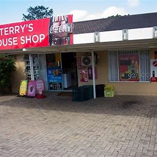

Welcome to Terry’s House Shop
Terry’s House

House Shop & Convenience Store
Your trusted local store for everyday essentials, daily groceries, and convenience neighborhood shopping at affordable prices.
Skip the long mall queues! Find all your daily essentials right around the corner.
Overview of Terry's House Shop
Meeting local needs with convenience and affordability
Our Mission
To provide basic needs for the local community at affordable prices as we are conveniently located close by for all residents.
Our Vision
To become the most affordable and convenient store in the neighborhood, ensuring reliable access to everyday essentials.
Target Audience
- Our primary audience is the local customers that need short-stock household items quickly without driving/walking to malls.
- Then the secondary audience consists of small business owners looking to outsource convenient everyday supplies.
Business Objectives & Performance Indicators
Maintaining store profitability and local customer satisfaction
Profitability - Management of daily, weekly, and monthly financial transactions allowing accurate tracking of sales income and restocking margins within each operating period.
Customer & Community KPIs - Tracking daily customer sales count to monitor neighborhood visitation frequency, ensuring consistent service reliability for our regular patrons.
Operations & Convenience KPIs - Continuous monitoring of product categories to identify "Top Selling Products", optimizing shelf stock to guarantee essential items never run out.